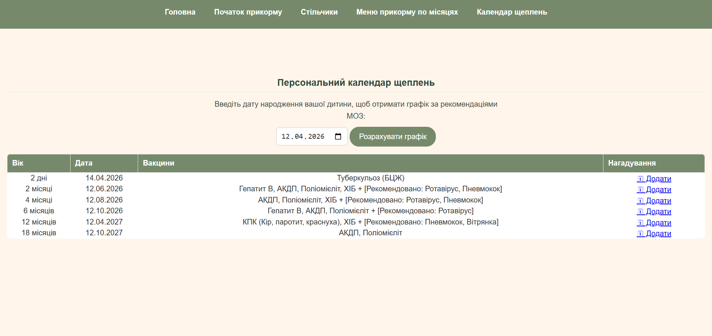
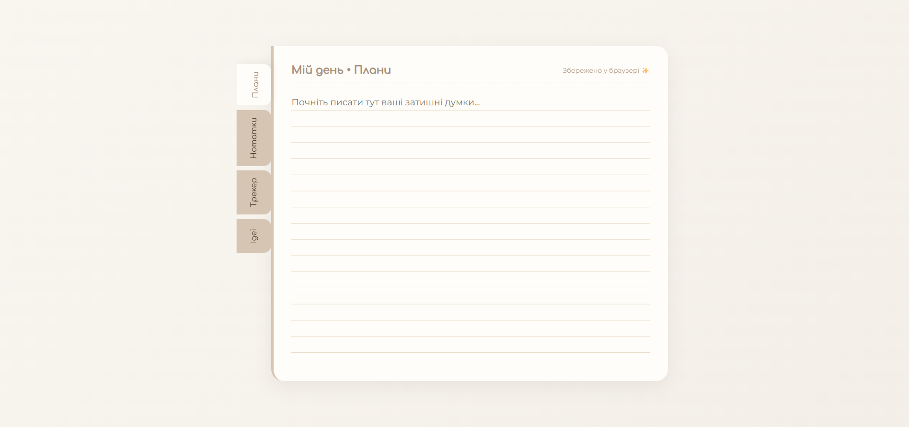
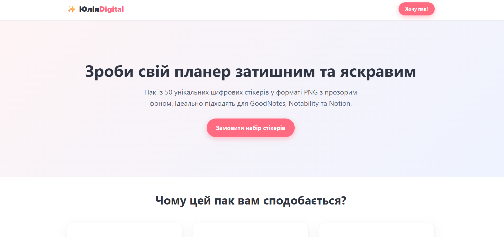

Привіт! Я — Frontend-розробниця з унікальним бекграундом, який навчив мене системності, занурення в деталі та структурування інформації. Маю вищу освіту (диплом бакалавра та магістра). Мій шлях у розробку почався з бажання створити не просто красиві картинки, а логічні, швидкі та зручні веб-інтерфейси. Багатий досвід роботи з людьми та викладання дають мені чітко розуміти потреби користувачів і зберігати спільну мову з клієнтами. Я не просто пишу код — я аналізую задачу, будую логічні зв’язки та створюю продукт, який вирішує конкретну проблему.
Адаптивна та семантична верстка, робота з Flexbox/Grid, анімації.
Створення інтерактивних елементів, робота з DOM, логіка інтерфейсу.
Вивчаю проектування баз даних, розумію принципи зв'язків між таблицями. На даний момент вивчаю SQL та моделювання даних.
Контроль версій, менеджмент репозиторіїв та хостинг проєктів.

Комплексний багатосторінковий веб-сайт, присвячений темі дитячого прикорму та здоров'я. Головною технічною особливістю проєкту є інтерактивний «Персональний календар щеплень». Скрипт на JavaScript автоматично змінює дату народження дитини, прораховує точний графік вакцинації відповідно до офіційних рекомендацій МОЗ та динамічно виводить структуровану таблицю з даними. Сайт має повну адаптивність для зручного користування зі смартфонів.
Дивитись на GitHub
Елегантний та мінімалістичний Progressive Web App (PWA) застосунок для планування дня та ведення нотаток. Реалізовані інтерактивні вкладки («Плани», «Нотатки», «Трекер», «Ідеї») за допомогою чистого JavaScript без перезавантаження сторінок. Об’єкт має локальну базу даних: завдяки інтеграції з LocalStorage, усі введені користувачем дані автоматично зберігаються в браузері й не зникають навіть після перезавантаження сторінки чи закриття вкладки.
Дивитись на GitHub
Професійний односторінковий комерційний сайт (Landing Page), розроблений для презентації та авторських цифрових стікерів. Особлива увага приділена сучасній UI/UX-структурі: реалізовано чіткі акцентні кнопки виклику до дії, інтерактивні картки, переваги та оптимізовану типографіку для максимальної конверсії. Верстка виконана з урахуванням адаптивності, забезпечуючи швидке завантаження та ідеальне відображення на мобільних пристроях, що є критичним місцем для комерційних проектів.
Дивитись на GitHub